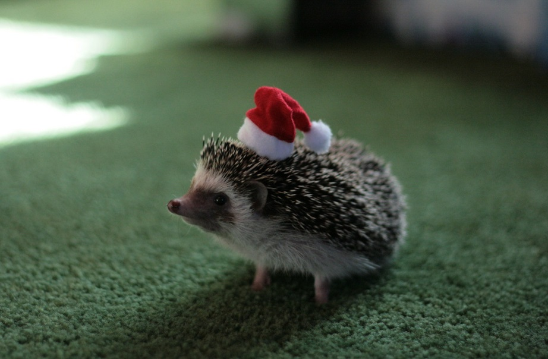

Frequently Asked Questions

Common Questions
-
1. What types of animals do you photograph?
We specialize in capturing the beauty of both domestic pets and wild animals, including cats, dogs, birds, and more!
-
2. Do you offer outdoor shoots?
Yes! We offer both studio and outdoor photography sessions. We can schedule a shoot at your preferred outdoor location.
-
3. How long does a session last?
Typically, a session lasts about 1-2 hours, depending on the animal and the type of shoot. We ensure that we take our time to get the best shots!
-
4. How do I book a session?
You can book a session by visiting our Contact Page and filling out the inquiry form. We will get back to you to finalize the details.
-
5. Can I purchase prints of my photos?
Yes, we offer high-quality prints of your photos. You can order prints after your session, or request them in advance!